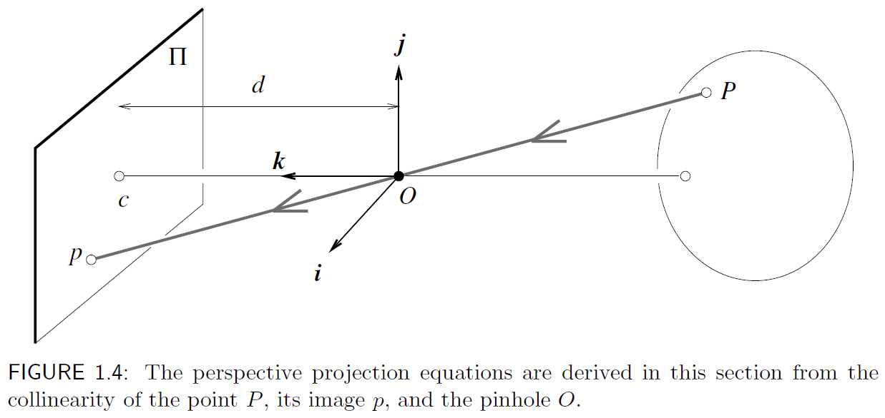
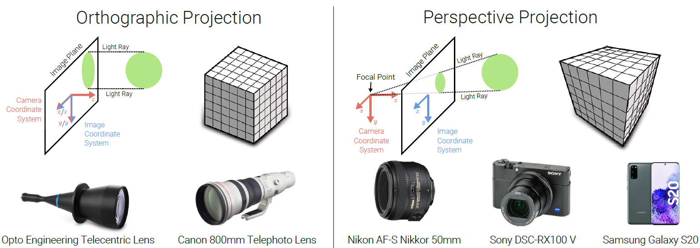
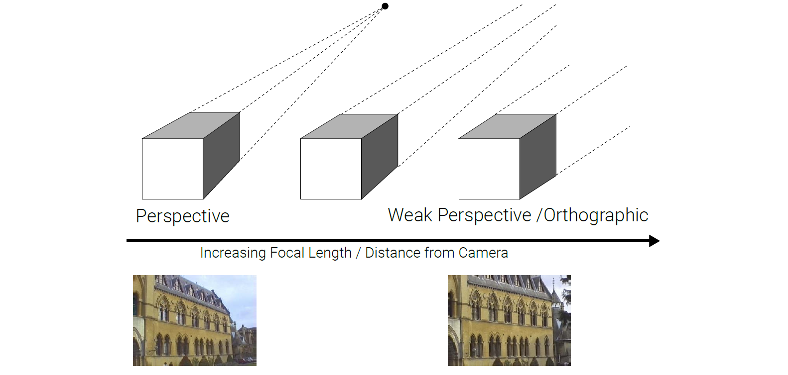
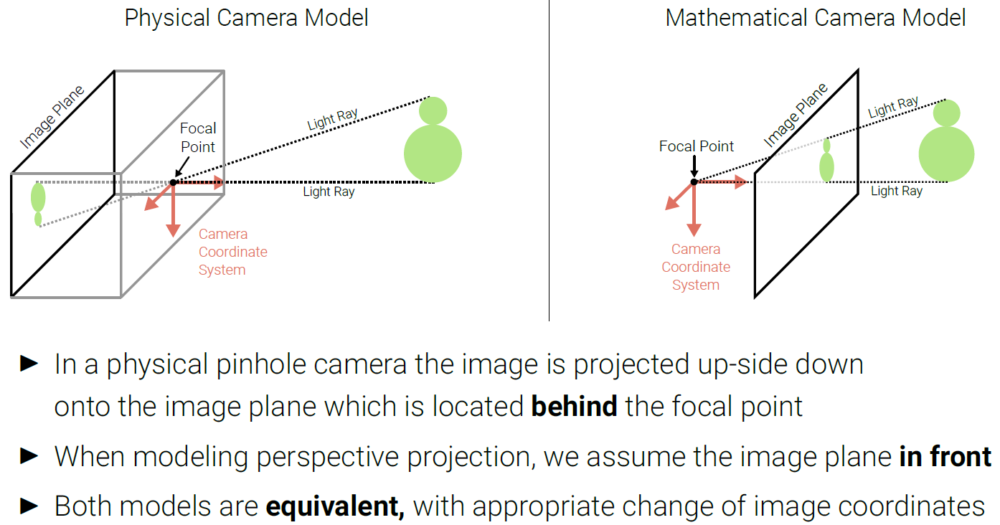
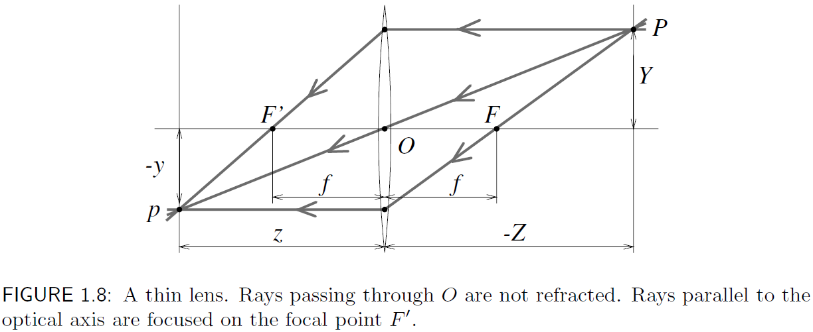
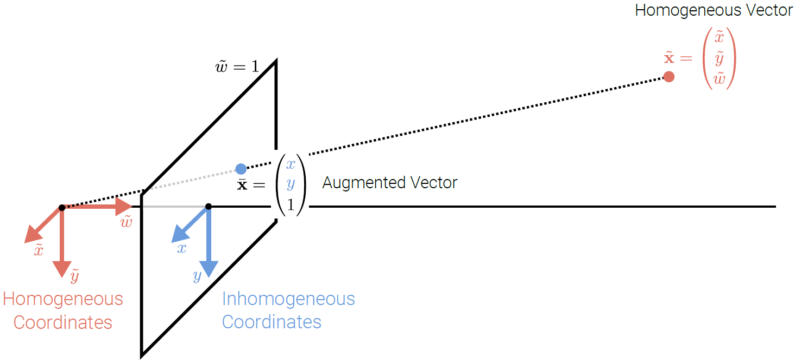
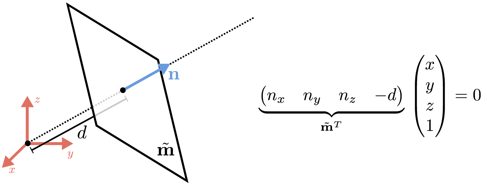
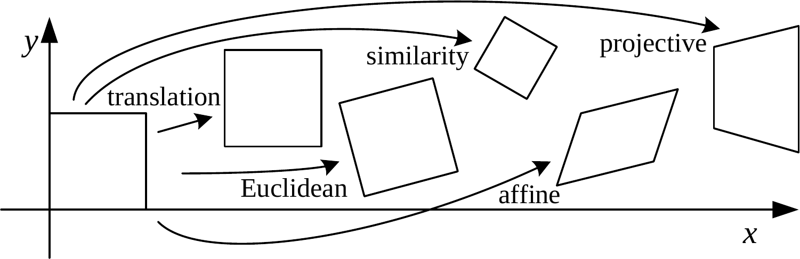
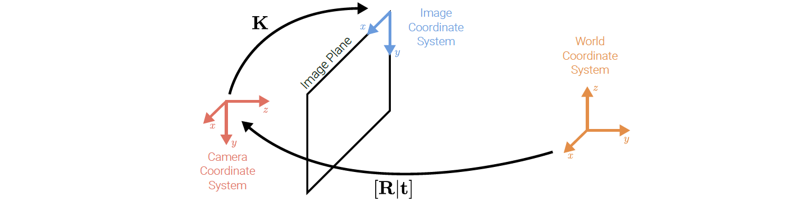
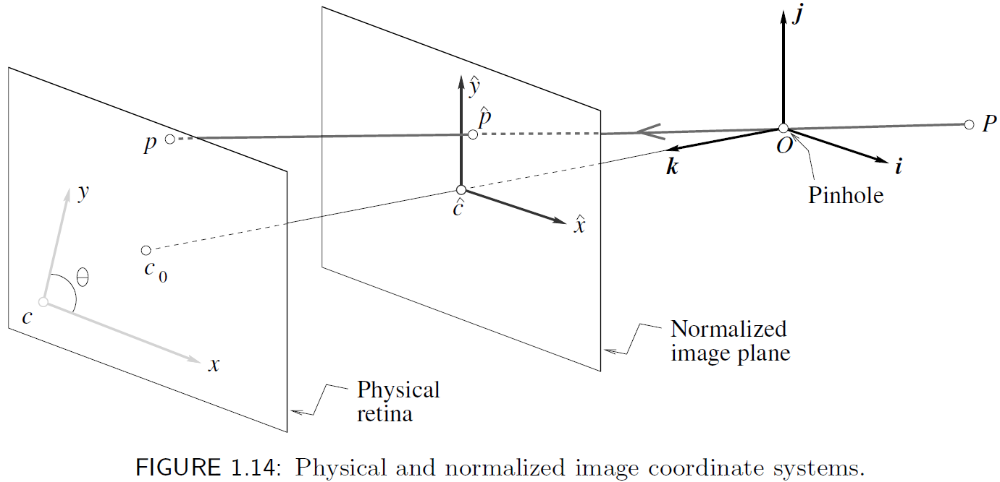

前言
这一章主要说明如何 将 3D 场景投影（project）到 2D 图像平面上。
本章内容绝大部分来自于 David Forsyth and Jean Ponce. "Computer Vision: A Modern Approach”, Prentice Hall, 2003.
因此，本章的数学符号和术语均参考该书，而公式编号也完全沿用该书的编号，但是基本只会标出会被后文引用的公式的编号。
此外，本章内容参考 Universität Tübingen 的计算机视觉课程（链接）。
文中部分补充内容的图片摘录自该课程的 PPT 讲义，因此图中符号会与文中其他部分不一致。
之后不再将上述书目和课程额外列入参考文献章节中，后文亦然。
图像成像
针孔透视模型
针对现实中的小孔成像（孔有大小）和摄像机镜头，我们可以用一个简化的 针孔透视投影模型 pinhole perspective projection model（又称中心透视投影 central perspective projection）来描述成像过程。在这个模型中，我们假设光线通过 针孔（pinhole） 进入摄像机，并在 成像平面（image plane） $\Pi$ 上形成一个倒立的图像。
使用坐标系 $(O, \boldsymbol{i}, \boldsymbol{j}, \boldsymbol{k})$ 来描述该模型，其中：
- 原点 $O$ 代表针孔（光心）的位置；
- 基向量 $\boldsymbol{i}$ 和 $\boldsymbol{j}$ 组成一个与成像平面 $\Pi$ 平行的二维坐标系，分别表示水平方向和垂直方向；
- 向量 $\boldsymbol{k}$ 指向成像平面 $\Pi$ 的法线方向，表示光线的传播方向；
- 通过针孔并垂直于平面 $\Pi$ 的直线称为 光轴（optical axis），光轴与成像平面 $\Pi$ 的交点 $c$ 称为 图像中心（image center）；
- 记成像平面 $\Pi$ 到针孔 $O$ 的距离为 $d$，称为 焦距（focal length）。

若有 景物（scene）（即真实世界）中的一点 $P = (X, Y, Z)$，其生成图像 $p = (x, y, z)$，此时有 $z = d$。
又因为 $P, O, p$ 这三个点共线，则有 $\overrightarrow{Op} = \lambda \overrightarrow{OP}$，此时有：
$$\begin{cases} x = \lambda X \\ y = \lambda Y \\ z = d = \lambda Z \end{cases} \Longleftrightarrow \lambda = \frac{x}{X} = \frac{y}{Y} = \frac{d}{Z} \quad \Rightarrow \begin{cases} \displaystyle x = d\frac{X}{Z} \\ \displaystyle y = d\frac{Y}{Z} \\ \end{cases} \\ $$
弱透视
考虑定义在 $Z = Z_0~(Z_0 < 0)$ 上的与光轴正交的平面 $\Pi_0$，对于 $\Pi_0$ 上的任意一点 $P = (X, Y, Z_0)$，上式可改写为：
$$\begin{cases} \displaystyle x = - mX \\ \displaystyle y = - mY \end{cases} \quad \text{where } m = -\frac{d}{Z_0}.\\ $$
其中 $m$ 称为 放大率（magnification），通常 $m > 0$。
- 放大率就是成像尺寸与实际尺寸的比值；
- $m > 0$ 时，上面的投影方程中 $X, Y$ 的系数均为负，表示成像是倒置的。
当景物深度与它们到照相机的平均距离相比很小时，放大率 $m$ 可以看成是一个常数，这种投影模型称为 弱透视（weak perspective）模型，或按比例的正交（scaled orthography）。
- 景物深度（scene’s relief）：指的是景物中不同点在光轴方向上的深度变化范围 $\Delta Z$，例如一个物体的厚度，或照相机到多个点之间的距离差异；
- 到照相机的平均距离：即景物中所有点到相机的平均深度 $\overline{Z}$；
- 当景物深度 $\Delta Z$ 相对于平均距离 $\overline{Z}$ 很小时，即 $\Delta Z \ll \overline{Z}$，可以认为所有点的深度 $Z$ 都接近于 $\overline{Z}$，从而使得放大率 $m = -\frac{d}{Z}$ 近似为一个常数 $m \approx -\frac{d}{\overline{Z}}$。
- → 个人理解：对于距离相机较远，且深度变化较小的景物，直接视其为在同一个平面 $Z_0$ 上，也就是用一个固定的放大率 $m$ 来描述整个景物的投影关系。
在上述弱透视投影的情形下，进一步地将放大率归一化，使得 $m = -1$，此时有 $x = X, y = Y$，这种投影模型称为 正交投影（orthographic projection）。
此时所有光线与 $k$ 轴平行，并与成像平面 $\Pi$ 正交，成像自然也没有倒置。


- 当我们令 $m < 0$ 时，$X$ 的系数变为正。此时我们可以理解为：将成像平面 $\Pi$ 对称移动到针孔 $O$ 的后面（相对于光线入射的方向），也就是让这个平面 $\Pi^\prime$ 与景物在同一侧。
- 进一步地，将这个对称的成像平面 $\Pi^\prime$ 进行归一化，即令 $m = -1$，从而得到正交投影模型。
- 对称成像平面的意义是什么？——去掉 $X$ 系数中的负号，简化投影方程。

带镜头的照相机 | 透镜初探
背景知识：
- 相机镜头（lens）相比于实际的小孔，可以聚光并保持图像锐化聚焦。
- 入射光 $r_1$ 从折射率为 $n_1$ 的介质进入折射率为 $n_2$ 的介质时，会发生折射，折射光 $r_2$ 的方向由斯涅尔定律（Snell’s law）描述：$n_1 \sin \alpha_1 = n_2 \sin \alpha_2$，其中 $\alpha_1, \alpha_2$ 为入射角和折射角。
理想化模型假设：
- 仅考虑折射效果，不考虑反射，即镜头为透镜；
- 入射角 $\alpha_1$ 较小时，有 $\sin \alpha_1 \approx \alpha_1$，此时斯涅尔定律可近似为 $n_1 \alpha_1 = n_2 \alpha_2$；
- 镜头围绕光轴旋转对称，两面均为半径为 $R$ 的球面，折射系数为 $n$；
- 镜头在真空中，真空折射系数为 $1$；
- 镜头为薄透镜，厚度可忽略，即进入透镜的光线从右边界折射后立即又在左边界上再次折射。
基于如上假设，给出如下图的薄透镜模型：

上图中的射线 $(PO)$ 穿过 $P$ 和透镜中心 $O$，不发生折射，仍然沿直线传播；
而其他穿过 $P$ 的射线在透镜处发生折射，被聚焦到沿 $(PO)$ 处深度为 $z$ 的点 $p$，满足：
$$\frac{1}{z} - \frac{1}{Z} = \frac{1}{f}, \quad \text{where } f = \frac{R}{2(n - 1)} \\ $$
其中 $f$ 是透镜的 焦距长度（focal length）。
- 从针孔透视的角度来考虑，如果取 $d = z$，则表示 $P$ 与 $p$ 位置关系的方程与针孔透视投影条件下的情况完全相同，因为 $P$ 与 $p$ 处在穿过透镜中心的射线上。
- 当 $Z \to -\infty$ 时，$f$ 就是透镜中心与聚焦物体所在平面之间的距离。光轴上距离透镜中心为 $f$ 的两个点 $F$ 与 $F'$ 称为透镜的焦点（focal points）。
变换、齐次坐标
刚体变换和齐次坐标
该部分需要对线性代数中的变换、向量与点的关系等有一定了解，参考鄙人拙作《从几何上直观理解线性代数》（知乎 | blog）。本文符号与该文并不一致，敬请谅解。
本节首次使用齐次坐标系来表征二维（2D）或三维（3D）的点。
齐次坐标系（homogeneous coordinates） 是一种用 $N+1$ 维的向量来表示 $N$ 维空间中的点（或向量）的坐标系统。
考虑坐标系 $(F) = (O, \boldsymbol{i}, \boldsymbol{j}, \boldsymbol{k})$ 中的点 $P$：$\boldsymbol{OP} = X\boldsymbol{i} + Y\boldsymbol{j} + Z\boldsymbol{k}$，显然坐标点可以看作向量。
定义一个三维常规（即非齐次，nonhomogeneous）坐标向量 $\boldsymbol{P} = (X, Y, Z)^\top \in \mathbb{R}^3$，其对应的齐次坐标向量为 $\tilde{\boldsymbol{P}} = (X, Y, Z, 1)^\top \in \mathbb{R}^4$。
——先给出如上定义，但是为什么要引入齐次坐标系？
在欧氏空间（Euclidean Space）的笛卡尔坐标系（Cartesian Coordinate System）（即标准 $XYZ$ 坐标系）中，旋转和缩放变换可以通过矩阵乘法来表示，而平移变换则只能通过向量加法来实现。但是，齐次坐标系允许我们将平移变换也表示为矩阵乘法，从而统一了各种几何变换的表示形式。
例如，考虑对两个三维欧氏坐标系 $(A)$、$(B)$ 之间的 刚体变换（rigid transformation）。
刚体变换又称欧几里得变换（Euclidean Transformation），是保持物体 形状和大小不变 的几何变换，不改变点间距离和角度，通常包括 旋转和平移。
坐标系 $(A)$ 经过刚体变换后得到坐标系 $(B)$，该过程如下：
令 $(A)$ 旋转 $\mathcal{R} \in SO(3)$ （$3 \times 3$ 旋转矩阵）并平移 $\boldsymbol{t} \in \mathbb{R}^3$，则有：
$${}^{A}\boldsymbol{P} = \mathcal{R}{}^{B}\boldsymbol{P} + \boldsymbol{t}\\ $$
其中 $^{A}\boldsymbol{P}, ^{B}\boldsymbol{P}$ 分别表示点 $P$ 在坐标系 $(A)$ 和 $(B)$ 下的坐标，$^{A}\boldsymbol{P}, ^{B}\boldsymbol{P} \in \mathbb{R}^3$。
当我们使用齐次坐标系时，可以将上述刚体变换 统一表示为矩阵乘法：
$${}^{A}\boldsymbol{P} = \mathcal{T}{}^{B}\boldsymbol{P}, \quad \text{where } \mathcal{T} = \begin{bmatrix} \mathcal{R} & \boldsymbol{t} \\ \boldsymbol{0}^{\top} & 1 \end{bmatrix}\\ $$
此时 $^{A}\boldsymbol{P}, ^{B}\boldsymbol{P} \in \mathbb{R}^4$。
同样地，利用齐次坐标，也可以将一个 3D 点（固定世界坐标系）到 2D 图像平面（照相机参考坐标系）的透视投影变换，用一个 $3 \times 4$ 的矩阵 $\mathcal{M}$ 来表示。
在固定世界坐标系中点 $P$ 的坐标向量 $\boldsymbol{P}=(X,Y,Z,1)^\top$，和其对应的照相机参考坐标系中的成像点 $p$ 的坐标向量 $\boldsymbol{p} = (x,y,1)^\top$，可由如下的透视投影公式表示：
$$\boldsymbol{p} = \frac{1}{Z} \mathcal{M} \boldsymbol{P} \tag{1.9}\label{1.9}\\ $$
上式中的投影矩阵 $\mathcal{M}$ 包含了照相机的 6 个外参数，在之后会详细介绍。
通过上述刚体变换、透视投影变换两个示例，我们可以总结齐次坐标系的优点：齐次坐标系能够将平移、旋转、缩放、透视投影等所有线性变换，统一表示为矩阵乘法，从而简化了计算和分析过程。
补充：图元、齐次坐标
在计算机视觉中，图元（primitives） 是指构成图像的基本元素，例如 点（points）、线（lines）、面（planes） 等。
一个 2D 点在非齐次坐标系中表示为 $\boldsymbol{x} = (x, y)^\top \in \mathbb{R}^2$，
其对应的齐次坐标表示为 $\tilde{\boldsymbol{x}} = (\tilde{x}, \tilde{y}, \tilde{w})^\top \in \mathbb{P}^2,~\text{where } \mathbb{P}^2 = \mathbb{R}^3 \backslash \{(0, 0, 0)\}$。
- $\mathbb{P}^2$ 称为 投影空间（projective space），不同于三维空间 $\mathbb{R}^3$，$\mathbb{P}^2$ 去除了原点 $(0, 0, 0)$。
- 两个齐次向量，如果它们只是相差一个共同的倍数（即“比例因子”，scale），那么它们是 等价的（equivalent）。例如，$\tilde{\boldsymbol{x}} = (\tilde{x}, \tilde{y}, \tilde{w})^\top$ 和 $\lambda \tilde{\boldsymbol{x}} = (\lambda \tilde{x}, \lambda \tilde{y}, \lambda \tilde{w})^\top$（其中 $\lambda \neq 0$）表示同一个点。
- 所有互为倍数的齐次向量被归为一个组，这个组称为 等价类（equivalence class）。
- $\Rightarrow$ 齐次向量的定义仅取决于比例关系。当看到一个齐次坐标时，它的绝对数值大小本身没有意义，有意义的是它的 各个分量之间的比例关系。
- 末尾为 $1$ 的向量 $\bar{\boldsymbol{x}}$ 称为 增广向量（augmented vector）。在非齐次向量末尾加上 $1$，即可得到对应的齐次（增广）向量：
$$\tilde{\boldsymbol{x}} = \left[\begin{array}{c}\tilde{x}\\ \tilde{y}\\ \tilde{w}\end{array}\right] = \left[\begin{array}{c}x \\ y \\ 1 \end{array}\right] = \left[\begin{array}{c}\boldsymbol{x} \\ 1 \end{array}\right] = \bar{\boldsymbol{x}}\\ $$
- 反向地，有：
$$\bar{\boldsymbol{x}} = \left[\begin{array}{c}\boldsymbol{x} \\ 1 \end{array}\right] = \left[\begin{array}{c}x \\ y \\ 1 \end{array}\right] = \frac{1}{\tilde{w}} \tilde{\boldsymbol{x}} = \frac{1}{\tilde{w}} \left[\begin{array}{c}\tilde{x}\\ \tilde{y}\\ \tilde{w}\end{array}\right] = \left[\begin{array}{c}{\tilde{x}}/{\tilde{w}} \\ {\tilde{y}}/{\tilde{w}} \\ 1 \end{array}\right]\\ $$
- 令 $\tilde{w} = 0$，则齐次坐标 $\tilde{\boldsymbol{x}} = (\tilde{x}, \tilde{y}, 0)^\top$ 表示在二维平面上的一个 无穷远点（point at infinity），或理想点（ideal point），即在该方向上延伸到无穷远处的点。这个坐标无法归一化为非齐次坐标，因为除以零是未定义的。在笛卡尔坐标中，这是无法优雅地表示的。

上图表示非齐次坐标、齐次坐标与增广坐标之间的关系。
回顾第一节中针孔透视投影模型，我们发现上图做了这么几件事：
- 将成像平面 $\Pi$ 移动到针孔 $O$ 的前面，得到对称成像平面 $\Pi^\prime$，这样就去掉了投影方程中的负号；
- 标准化：令成像平面 $\Pi^\prime$ 到针孔 $O$ 的距离 $d = 1$，即平面距离针孔一个单位。
相应地，2D 的线同样可以用齐次坐标 $\tilde{\boldsymbol{l}} = (a, b, c)^\top$ 来表示：
$$\left\{\bar{\boldsymbol{x}} | \tilde{\boldsymbol{l}}^\top \bar{\boldsymbol{x}} = 0 \right\} \quad \Longleftrightarrow \quad \left\{x, y | ax + by + c = 0 \right\} $$
对 $\tilde{\boldsymbol{l}}$ 进行标准化：$\tilde{\boldsymbol{l}} = (n_x, n_y, d)^\top = (\boldsymbol{n}, d)^\top \text{ with }\left\|\boldsymbol{n}\right\|_2 = 1$，
此时，$\boldsymbol{n}$ 是线的法向量，$d$ 是线到原点的距离。
另外，无穷远线 $\tilde{\boldsymbol{l}}_\infty = (0, 0, 1)^\top$ 穿过所有的无穷远点。无穷远线无法标准化。
同样地，3D 面也可以用齐次坐标 $\tilde{\boldsymbol{m}} = (a, b, c, d)^\top$ 来表示：
$$\left\{\bar{\boldsymbol{x}} | \tilde{\boldsymbol{m}}^\top \bar{\boldsymbol{x}} = 0 \right\} \quad \Longleftrightarrow \quad \left\{x, y, z | ax + by + cz + d = 0 \right\} $$
标准化：$\tilde{\boldsymbol{m}} = (\boldsymbol{n}, -d)^\top \text{ with }\left\|\boldsymbol{n}\right\|_2 = 1$；
无穷远面 $\tilde{\boldsymbol{m}}_\infty = (0, 0, 0, 1)^\top$ 穿过所有的无穷远点。

补充：变换
2D 变换：

- 平移（translation）：$\displaystyle \boldsymbol{x}^\prime = \boldsymbol{x} + \boldsymbol{t}\quad\Leftrightarrow\quad \bar{\boldsymbol{x}}^\prime = \left[\begin{matrix}\boldsymbol{I} & \boldsymbol{t} \\ \boldsymbol{0}^\top & 1 \end{matrix}\right]\bar{\boldsymbol{x}}$
- 刚体（rigid）/ 欧氏（Euclidean）：$\displaystyle \boldsymbol{x}^\prime = \boldsymbol{R}\boldsymbol{x} + \boldsymbol{t}\quad\Leftrightarrow\quad \bar{\boldsymbol{x}}^\prime = \left[\begin{matrix}\boldsymbol{R} & \boldsymbol{t} \\ \boldsymbol{0}^\top & 1 \end{matrix}\right]\bar{\boldsymbol{x}},~\text{where } \boldsymbol{R} \in SO(2)~\text{with } \boldsymbol{R}\boldsymbol{R}^\top = \boldsymbol{I}, \text{det}(\boldsymbol{R}) = 1$
- 相似（similarity）：$\displaystyle \boldsymbol{x}^\prime = s\boldsymbol{R}\boldsymbol{x} + \boldsymbol{t}\quad\Leftrightarrow\quad \bar{\boldsymbol{x}}^\prime = \left[\begin{matrix}s\boldsymbol{R} & \boldsymbol{t} \\ \boldsymbol{0}^\top & 1 \end{matrix}\right]\bar{\boldsymbol{x}}$
- 仿射（affine）：$\displaystyle \boldsymbol{x}^\prime = \boldsymbol{A}\boldsymbol{x} + \boldsymbol{t}\quad\Leftrightarrow\quad \bar{\boldsymbol{x}}^\prime = \left[\begin{matrix}\boldsymbol{A} & \boldsymbol{t} \\ \boldsymbol{0}^\top & 1 \end{matrix}\right]\bar{\boldsymbol{x}},~\text{where } \boldsymbol{A} \in \mathbb{R}^{2\times 2},~\text{det}(\boldsymbol{A}) \neq 0$
- 投影（projective）：$\displaystyle \tilde{\boldsymbol{x}}^\prime = \boldsymbol{H}\tilde{\boldsymbol{x}}\quad (\bar{\boldsymbol{x}} = \frac{1}{\tilde{w}}\tilde{\boldsymbol{x}}), ~\text{where } \boldsymbol{H} \in \mathbb{R}^{3\times 3}$
内参数、外参数
各个坐标系，及其与内外参数的关系
数字图像是空间离散的，通常是分割成矩形的图像元素，即 像素（pixels）。
景物在映射到图像平面 $\Pi$ 之后，还需要进一步映射到像素平面上。
事实上，世界坐标系和图像坐标系是相对于一系列的物理参数而言的，例如：镜头的焦距、像素大小、图像中心位置与照相机的位置和方向。这些参数可分为：
- 内参数（intrinsic parameters）：关于照相机坐标系相对于理想坐标系（见上一节）的参数；
- 外参数（extrinsic parameters）：关于照相机坐标系对应固定世界坐标系，并且在空间中指定其位置和方向的参数。
——各位稍等一下，上面的这几段话是我从 David Forsyth 书中抄下来的，不知道大家有没有读懂，反正我是没读懂。个人感觉英文原文比中文翻译好懂，但真让我翻译那还是省省吧。先看看英文原文：
This section identifies these parameters. We will distinguish the intrinsic parameters, which relate the camera’s coordinate system to the idealized coordinate system used in Section 1.1, from the extrinsic parameters, which relate the camera’s coordinate system to a fixed world coordinate system and specify its position and orientation in space.
relate sth. to sth. 意为"把某事物与另一事物联系起来"，常用于表示两者之间的关联性。这里将这个词组翻译为“相对于”或“对应”显然是不合适的。
接下来我将从我的理解出发，重新讲讲 David Forsyth 书中这一部分开篇的内容。
为了从数学上研究从 3D 到 2D 的投影过程中的各种变换，先给出如下几个坐标系的定义：
- 世界坐标系：3D，描述现实世界物体位置，通常是一个固定的参考系；
- 相机坐标系：3D，描述物体相对于相机的位置和方向，以相机焦点为原点，光轴为 $z$ 轴的坐标系（焦点即所有光线汇聚的点，如针孔透视模型中的针孔）；
- 图像物理坐标系（又称物理成像坐标系）：2D，描述图像平面上点的位置，以光轴和图像平面交点为原点，单位为物理长度（如毫米）；
- 图像像素坐标系：2D，描述图像上像素位置，以图像左上角为原点，单位为像素。
我们可以发现：
- 世界坐标系不一定与相机坐标系对齐，二者之间存在一个刚体变换关系；
- 从相机坐标系到图像坐标系的变换是一个透视投影过程，从 3D 投影到 2D；
- 为了能形成数字图像，图像物理坐标系还需要映射到图像像素坐标系上，这个过程涉及到像素的大小和位置。
内外参数是描述各个坐标系之间变换的物理参数：
- 外参描述 相机坐标系 与 世界坐标系 之间的联系，确定了相机在空间中的位置和姿态。
- 内参描述 图像坐标系 与 相机坐标系 之间的联系，描述了相机内部属性。

内参数
回顾针孔透视投影模型，将透镜简化为小孔成像（因此这里的 $f$ 应为像距），从 3D 投影到 2D 时，有：
$$\frac{Z}{f} = \frac{X}{x} = \frac{Y}{y} \quad \Rightarrow \quad \begin{cases} x = f\dfrac{X}{Z} \\ y = f\dfrac{Y}{Z} \end{cases} \\ $$
现在我们将相机坐标系中的点 $\boldsymbol{P} = (X, Y, Z)^\top$ 投影到物理坐标系上，具体来讲就是投影到一个虚拟的、旋转到针孔另一侧的成像平面 $\Pi^\prime$ 上，该平面与针孔的距离为一个单位距离（$f=1$），也就是投影到归一化成像平面上，得到齐次坐标投影点 $\tilde{\boldsymbol{p}} = (\tilde{x}, \tilde{y}, 1)^\top$：（相机 → 物理）
$$\begin{cases} \tilde{x} = \dfrac{X}{Z} \\ \tilde{y} = \dfrac{Y}{Z} \end{cases} \quad \Longleftrightarrow \quad \tilde{\boldsymbol{p}} = \frac{1}{Z} \left(\begin{matrix}Id & \boldsymbol{0}\end{matrix}\right) \boldsymbol{P} \tag{1.10}\label{1.10}\\ $$
为啥要投影到这么一个增广向量上呢？
- 一方面，投影到虚拟的对称成像平面上可以去掉投影方程中的负号，让像不再颠倒，但是在数学上能够与实像等价；
- 另一方面，物理坐标系可看作是 3D 的相机坐标系与 2D 的图像像素坐标系之间的中间过渡，有了物理坐标系后，可以通过对物理坐标进行缩放，来适应像素长宽不同的数字图像。
- 显然，对于一组平行的成像平面，它们都是等价的。若有一条直线与这些平面相交，得到的所有交点的坐标之间只相差一个比例因子，坐标的各个分量比例仍保持不变。
- 选用归一化的成像平面之后，上式从相机坐标系到物理坐标系的投影方程没有额外的系数，如果选用其他平行的成像平面（如投影到 $\lambda \boldsymbol{p}$ 上），则在接下来从物理坐标系映射到像素坐标系的过程中，又额外地引入一个系数 $\lambda$。
- 总而言之，选用归一化的成像平面是出于计算方便，与选择其他平行的成像平面并无本质区别。
然后再从物理坐标系映射到像素坐标系上，此时的像素成像平面——或称物理视网膜（retina）——与针孔的距离 $f \neq 1$。同时，点 $p$ 坐标的单位也变为像素，而这个像素有可能是长方形，所以在 $x$ 和 $y$ 分量上各有一个额外的比例因子 $k$ 和 $l$，因此有：（物理 → 像素）
$$\begin{cases} x=kf\dfrac{X}{Z} = kf\tilde{x} \\ y=lf\dfrac{Y}{Z} = lf\tilde{y} \end{cases} \quad \xrightarrow[\beta = lf]{\alpha = kf} \quad \begin{cases} x = \alpha \tilde{x} \\ y = \beta \tilde{y} \end{cases} \tag{1.11}\label{1.11}\\ $$
其中，像素大小为 $1/k \times 1/l$，$k,l$ 的单位为像素 / 单位长度，$\alpha, \beta$ 分别是相机在 $x$ 和 $y$ 方向上的 等效焦距，单位为像素。

还没完成呢！接下来还有两件事要干。
前面说过，像素坐标系的原点在图像的某个顶点，比如左上角或左下角，因此需要对式 $\eqref{1.11}$ 做个平移变换 $\boldsymbol{t} = (x_0, y_0)^\top$：
$$\begin{cases} x = \alpha \tilde{x} + x_0 \\ y = \beta \tilde{y} + y_0 \end{cases} \tag{1.12}\label{1.12}\\ $$
最后，由于制造工艺的误差，照相机坐标系可能存在偏差，即两个坐标轴之间的夹角 $0$ 不完全等于 $90°$。在这种情况下，式 $\eqref{1.12}$ 改为：
$$\begin{cases} x = \alpha \tilde{x} - \alpha \cot \theta \tilde{y} + x_0 \\ y = \dfrac{\beta}{\sin \theta} \tilde{y} + y_0 \end{cases} \tag{1.13}\label{1.13}\\ $$
改写成矩阵形式：
$$\boldsymbol{p} = \mathcal{K} \tilde{\boldsymbol{p}}, \quad \text{where } \boldsymbol{p} = \begin{bmatrix}x \\ y \\ 1\end{bmatrix},~ \text{and } \mathcal{K} = \begin{bmatrix} \alpha & -\alpha \cot \theta & x_0 \\ 0 & \dfrac{\beta}{\sin \theta} & y_0 \\ 0 & 0 & 1 \end{bmatrix} \tag{1.14}\label{1.14}\\ $$
这个 $3 \times 3$ 矩阵 $\mathcal{K}$ 叫做照相机的 内部矫正矩阵（calibration matrix），是一个仿射变换。
结合式 $\eqref{1.10}$ 和式 $\eqref{1.14}$，可得到在上一节中提到的式 $\eqref{1.9}$：
$$\boldsymbol{p} = \frac{1}{Z} \mathcal{K} (\begin{matrix}Id & \boldsymbol{0}\end{matrix}) \boldsymbol{P} = \frac{1}{Z} \mathcal{M} \boldsymbol{P}, \quad \text{where } \mathcal{M} = (\begin{matrix}\mathcal{K} & \boldsymbol{0}\end{matrix}) $$
这里 $\alpha$、$\beta$、$\theta$、$x_0$、$y_0$ 是照相机的 5 个内参数。
外参数
按照从 3D 到 2D 的顺序，是不是应该先讲从世界坐标系到相机坐标系的变换，也就是先讲外参数，再讲内参数呢？大家姑且读下去吧……
现在再考虑，如果世界坐标系 $(W)$ 与相机坐标系 $(C)$ 不同，则从 $(W)$ 到 $(C)$ 的变换是一个刚体变换，有：
$$^{C}\boldsymbol{P} = \begin{bmatrix} \mathcal{R} & \boldsymbol{t} \\ \boldsymbol{0}^\top & 1 \end{bmatrix} {}^{W}\boldsymbol{P}\\ $$
其中，旋转矩阵 $\mathcal{R} \in SO(3)$ 由三个独立参数定义，平移向量 $\boldsymbol{t} \in \mathbb{R}^3$ 有三个坐标值，这六个参数便是照相机的外参数。外参数定义了相机坐标系 $(C)$ 相对于世界坐标系 $(W)$ 的位置和方向。
现在，结合内外参数，得到一般形式的 透视投影方程：
$$\boldsymbol{p} = \frac{1}{Z} \mathcal{M} \boldsymbol{P},\quad \text{where } \mathcal{M} = \mathcal{K} (\begin{matrix}\mathcal{R} & \boldsymbol{t}\end{matrix}) \tag{1.16}\label{1.16}\\ $$
令 $\boldsymbol{m}^{\top}_1,~\boldsymbol{m}^{\top}_2,~\boldsymbol{m}^{\top}_3$ 表示 $\mathcal{M}$ 的三个行向量，则有 $Z = \boldsymbol{m}_3 \boldsymbol{P}$，式 $\eqref{1.16}$ 可写成如下等价形式：
$$\begin{cases} x = \dfrac{\boldsymbol{m}_1 \cdot \boldsymbol{P}}{\boldsymbol{m}_3 \cdot \boldsymbol{P}} \\ y = \dfrac{\boldsymbol{m}_2 \cdot \boldsymbol{P}}{\boldsymbol{m}_3 \cdot \boldsymbol{P}} \end{cases} \tag{1.17}\label{1.17}\\ $$
透视投影矩阵可以由 5 个内参数、矩阵 $\mathcal{R}$ 的三个行向量（$\boldsymbol{r}^{\top}_1,~\boldsymbol{r}^{\top}_2,~\boldsymbol{r}^{\top}_3$）和向量 $\boldsymbol{t}$ 的三个坐标（$t_1,~t_2,~t_3$）显式表示：
$$\mathcal{M} = \begin{bmatrix} \alpha \boldsymbol{r}^{\top}_1 - \alpha \cot \theta \boldsymbol{r}^{\top}_2 + x_0 \boldsymbol{r}^{\top}_3 & \alpha t_1 - \alpha \cot \theta t_2 + x_0 t_3 \\ \dfrac{\beta}{\sin \theta} \boldsymbol{r}^{\top}_2 + y_0 \boldsymbol{r}^{\top}_3 & \dfrac{\beta}{\sin \theta} t_2 + y_0 t_3 \\ \boldsymbol{r}^{\top}_3 & t_3 \end{bmatrix} \tag{1.18}\label{1.18}\\ $$
$\mathcal{R}$ 由三个基旋转的积表示，则 $\boldsymbol{r}_i~(i=1,2,3)$ 可以显式地用三个角度来表示。
上式显式地给出 $\mathcal{M}$ 中全部的 11 个照相机参数。
总结整个透视投影过程：
$$\boldsymbol{p} = \underbrace{ \underbrace{\begin{bmatrix} k & -k \cot \theta & x_0 \\ 0 & \dfrac{l}{\sin \theta} & y_0 \\ 0 & 0 & 1 \end{bmatrix}}_{\text{仿射变换}} \underbrace{\begin{bmatrix} f & 0 & 0 & 0 \\ 0 & f & 0 & 0 \\ 0 & 0 & 1 & 0 \end{bmatrix}}_{\text{透视投影变换}} }_{\text{内参矩阵}} \underbrace{ \underbrace{ \begin{bmatrix} \mathcal{R} & \boldsymbol{t} \\ \boldsymbol{0}^\top & 1 \end{bmatrix} }_{\text{刚体变换}} }_{\text{外参矩阵}} \boldsymbol{P}\\ $$
彩蛋
- 彩蛋图片：
- 作者：カンパ twi@campagne_9，pid：2520952
- 来源：pixiv ID：111239440